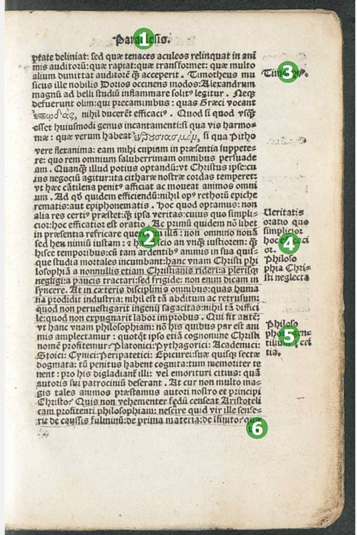

ReadingOrder
Individual page elements are grouped in order not to break up content-related and formal connections. For such a grouping, a reading order can usually be specified. A ReadingOrder only exists between Regionen. The reading order within a line is only determined by the order of the individual word elements, it is not marked explicitly.
This is done with the element <ReadingOrder>.
- If the elements are related to each other (e.g. a heading and the following paragraph), the
reading direction is classified as "ordered". In this case the element
<OrderedGroup>must be used. - If the elements are equal (e.g. advertising) and stand alone, the reading direction is classified as "unordered". In this case the element
-
<UnorderedGroup>must be used.
The reading direction is determined by a consecutive numbering (starting at zero). The regions of a page are first sorted from left to right (right to left in the case of counterclockwise fonts) and from top to bottom, taking column divisions into account.
Elements which are situated outside the print space (e.g. marginalia or catch words) are always considered to be read after the print space.
ReadingOrder in PAGE XML
<ReadingOrder>
<OrderedGroup id="ro_1542194237187" caption="Regions reading order">
<RegionRefIndexed index="0" regionRef="r_1"/>
<RegionRefIndexed index="1" regionRef="r_2"/>
</OrderedGroup>
</ReadingOrder>image examples

